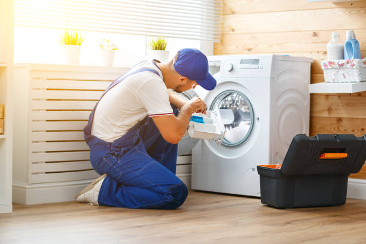

Lakeside Montana
info@usaappliancerepair.pro
Lakeside Montana
info@usaappliancerepair.pro

Need appliance repair in Lakeside Montana ? Trust our skilled technicians for efficient service on refrigerators, washers, dryers, and more. Affordable, quick, and professional care tailored to your needs!
Click Here To Call Us (877) 848-1711Looking for reliable appliance repair services in Lakeside Montana ? You've come to the right place! Our team specializes in repairing a wide range of household appliances, ensuring your home runs smoothly. From malfunctioning refrigerators and dishwashers to faulty washers and dryers, we have the expertise to fix it all. With years of experience, our technicians deliver quick and efficient solutions to save you time, money, and stress.
At , we understand how inconvenient a broken appliance can be. That’s why we offer same-day repair services across Lakeside Montana to get your appliances back in working order as soon as possible. We service all major brands, including Samsung, LG, Whirlpool, GE, and more, ensuring top-notch repairs with genuine replacement parts.
What sets us apart is our commitment to customer satisfaction. We provide upfront pricing with no hidden fees, so you’ll know exactly what to expect. Our licensed and insured technicians use advanced diagnostic tools to pinpoint issues and offer long-lasting solutions. Whether it’s a simple fix or a complex repair, we’re your trusted appliance repair partner in Lakeside Montana .
Contact us today to schedule your appliance repair service in Lakeside Montana and experience the difference! Reliable, fast, and affordable—choose for all your appliance repair needs.
Residential & commercial Appliance Repair
Quality services at affordable prices
Immediate 24/ 7 emergency services


When it comes to reliable and affordable appliance repair in Lakeside Montana you need experts who can get the job done right the first time. Our team of experienced technicians is dedicated to providing top-tier repair services for all your household appliances, ensuring they function like new again.
Fast, Efficient Service
We understand the importance of your appliances in your daily life. That’s why we offer fast and efficient repair services in Lakeside Montana minimizing any downtime and disruptions to your routine. Whether it's a refrigerator, washer, dryer, or oven, our technicians arrive promptly and are fully equipped to handle any issue, big or small.
Skilled, Licensed Technicians
Our appliance repair experts in Lakeside Montana are licensed, highly trained, and have years of experience working with a wide range of appliance brands. We ensure that every repair is performed with precision and attention to detail, giving you peace of mind knowing your appliances are in good hands.
Affordable, Transparent Pricing
We believe in offering transparent, upfront pricing for all our repair services in Lakeside Montana . No hidden fees, no surprises—just honest, affordable rates to ensure you're getting the best value for your money.
Satisfaction Guaranteed
We stand behind the quality of our work, offering a satisfaction guarantee on all repairs. If you're not completely satisfied with our service, we'll make it right.
Choose our Lakeside Montana appliance repair experts for reliable, professional, and affordable appliance repairs that get your home running smoothly again!
Residential & commercial Appliance Repair
Quality services at affordable prices
Immediate 24/ 7 emergency services
Smart appliances enhance everyday life with convenience, but when they malfunction, it can be frustrating. Our Smart Appliance Repair Services in Lakeside Montana focus on integrating advanced technology with expert troubleshooting. Our technicians are well-versed in diagnosing issues with connected devices, ensuring they are restored to their full capabilities. We pride ourselves on staying updated with the latest innovations and technologies in the appliance industry. Let us bring efficiency back to your smart home with fast, reliable service you can count on .

Portable appliances offer flexibility and convenience, but they can also face issues. Our Portable Appliance Repair services ensure that your smaller devices are handled with care and expertise. Whether it’s a countertop oven or a portable washer, our skilled technicians can address a range of problems. We understand the importance of these appliances in your day-to-day life, and we prioritize quick and effective solutions. Experience our high-quality service and dedication to customer satisfaction with portable appliance repairs at Lakeside Montana .

More and more homeowners and businesses are focusing on energy efficiency in their appliance choices. Our Energy-Efficient Appliance Repair Services specialize in maintaining and repairing eco-friendly appliances to ensure they continue performing at their best. Whether it's washing machines, dishwashers, or refrigerators, our experienced technicians can address mechanical faults that may be compromising energy efficiency. We focus on sustainable solutions and high-quality repairs, extending the life of your appliances while also helping you save on energy costs. Reach out to us for energy-efficient appliance expertise in Lakeside Montana .

Appliance emergencies can occur at any time, disrupting our daily routines and business operations. Our Emergency Appliance Repair Services are designed to provide immediate assistance for urgent appliance breakdowns. Whether it's a refrigerator that stopped cooling on a hot summer day or an oven that failed right before a big event, we are here 24/7 for your urgent repair needs. Our skilled technicians come equipped with the necessary tools and expertise to diagnose and fix problems on the spot. Trust us to get your appliances back up and running without delay .

Regular maintenance is the key to prolonging the life of your appliances. At Appliance Repair, we offer customized appliance maintenance plans designed to fit your individual needs. Our plans include routine inspections, timely servicing, and preventive repairs, ensuring your appliances operate at peak performance. Our technicians are trained to identify potential issues before they escalate into costly repairs, securing your appliance investments for years to come. Choose us for affordable and comprehensive maintenance solutions tailored to your home or business .
Installing new appliances is as crucial as ensuring they work well. Our Appliance Installation and Setup with Repairs services in Lakeside Montana provide comprehensive solutions for all your needs. From proper installation of kitchen appliances to setup of complex systems, we ensure everything is connected and functioning optimally. If issues arise during or after installation, our team is ready to address them swiftly. Trust us for expert installation paired with the knowledge to troubleshoot issues on the spot, giving you peace of mind and confidence in your new appliances in Lakeside Montana .

Gas appliances require specialized knowledge to ensure safe and effective repairs. Our Gas Appliance Repair Services cater to all types of gas-powered appliances, including ovens, cooktops, and water heaters. Our trained technicians are knowledgeable about safety protocols and local regulations related to gas appliance repair. We focus on diagnosing issues such as gas leaks, ignition failures, and pilot light problems to guarantee the safe operation of your appliances. When you choose us, you can rest assured that your gas appliances are in capable hands, providing peace of mind and professional service .

The control panel is the brain of your appliances; when it fails, it can disrupt their operation. Our Appliance Control Panel Repairs focus on restoring functionality to your kitchen and laundry devices. Our experienced technicians are adept at troubleshooting control panel issues, including faulty buttons, inconsistent displays, and wiring problems. We prioritize quality and accuracy in every repair, using only original parts to ensure reliability. Choose us for meticulous service, and restore your appliance’s performance with our specialized repair solutions in Lakeside Montana .

Vintage or antique appliances are treasured parts of many homes, offering charm and nostalgia. Our Vintage or Antique Appliance Repair services cater to those who wish to maintain the unique qualities of their older appliances. Our technicians are well-versed in the intricacies of vintage models, offering specialized repairs that retain the appliance's original character while ensuring functionality. We understand the value of these appliances, both sentimentally and economically, which is why we provide careful, dedicated service that respects their legacy. Choose us for your vintage appliance restoration needs and keep the spirit of your home alive.
Years Experience
Expert Technicians
Satisfied Clients
Compleate Projects
At Appliance Repair, we understand that a malfunctioning appliance can disrupt your daily routine. That’s why we are committed to providing fast, reliable, and affordable appliance repair services across all cities in Lakeside Montana . Our team of highly trained technicians is ready to tackle any issue with your appliances, ensuring they’re up and running smoothly in no time.
We stand out because of our customer-first approach. Our technicians take the time to listen to your concerns, thoroughly diagnose the issue, and offer cost-effective solutions. Whether it's a refrigerator, washing machine, or oven, we repair all major household appliances, ensuring they operate like new. Our years of experience and expertise guarantee that we know how to handle any appliance, no matter the make or model.
We pride ourselves on offering prompt service, often with same-day or next-day availability, so you’re not left waiting. Transparency is key in our business. We provide clear estimates before starting any repair, so you won’t be hit with unexpected costs.
When you choose Appliance Repair in Lakeside Montana you’re choosing a trusted company that values quality workmanship, integrity, and customer satisfaction. With competitive rates and a commitment to excellence, we are your go-to appliance repair company in Lakeside Montana . Let us restore your appliances quickly and efficiently—call us today!
Is your refrigerator on the fritz? Don't let spoiled food and rising grocery bills affect your household. Our expert technicians specialize in Refrigerator Repair Services ensuring your appliance runs efficiently and reliably. We understand that a malfunctioning fridge can be a major inconvenience, which is why we offer same-day service and flexible scheduling to fit your busy life. Our team is trained on all types of refrigerator models, from side-by-side and top freezer units to French door fridges. We utilize state-of-the-art diagnostic tools to identify and quickly resolve any issues, whether it’s a compressor problem, thermostat malfunction, or clogged defrost drain. Choosing us means opting for quality, transparency, and peace of mind. Plus, all repairs are backed by a warranty, so you know you're getting the best service possible in Lakeside Montana .
A malfunctioning washing machine can disrupt your laundry routine and lead to a pile-up of dirty clothes. At our Washing Machine Repair Services we offer comprehensive solutions for all makes and models, including top-load, front-load, and stackable washers. Our skilled technicians are well-equipped to handle issues such as leaks, spin cycle failures, and error codes. We prioritize customer satisfaction and strive for same-day service to get your appliance back to working order. With our extensive knowledge and commitment to quality, you can rely on us for long-lasting solutions. Our transparent pricing and thorough explanations make us the preferred choice for washing machine repairs .
Is your dryer leaving clothes damp even after a full cycle? Our Dryer Repair Services are designed to tackle every common dryer issue effectively. We understand how important it is for you to keep up with laundry, and that’s why our team is dedicated to offering timely and professional repair services. Our trained technicians are experienced with various dryer types, including gas and electric models. They’ll thoroughly inspect your appliance to identify issues such as faulty heating elements, clogged vents, or broken drum supports, using high-quality parts for all replacements. Work with us, and enjoy guaranteed satisfaction; our commitment to customer service sets us apart .
When your dishwasher stops working, it can lead to a mountain of dirty dishes and frustration. Our Dishwasher Repair Services are designed to alleviate your inconvenience by providing quick and effective repairs for all models. Our qualified technicians can tackle any issue from leaks and drain problems to electronic malfunctions. We understand that time is valuable, which is why we offer flexible scheduling and strive for same-day services. With our commitment to honesty and transparent pricing, you'll know exactly what to expect when you choose us. Count on our appliance repair specialists to restore your dishwasher’s efficiency and reliability.
A broken oven can halt your culinary creations and disrupt family meals. Our Oven and Stove Repair services are designed for homeowners who value quality and reliability. We are known for our prompt response times and thorough inspections, addressing everything from temperature inconsistencies to igniter malfunctions. Our certified technicians bring extensive experience with both gas and electric ovens and stovetops, allowing us to diagnose and resolve issues accurately and efficiently. Customer satisfaction is our priority, which is why we take the time to explain the problems and potential solutions clearly. Choose us for dependable oven repair services .
Is your microwave not heating, or do you hear strange noises while it's running? Our Microwave Repair services in Lakeside Montana are here to assist you. As a quick and convenient cooking appliance, malfunctioning microwaves can be quite the hassle in your day-to-day life. Our technicians are fully equipped to service a broad range of microwave brands and models, ensuring you receive the most reliable repairs. From issues related to door switches to circuit board replacements, we tackle it all. Our team values your time and strives for a quick turnaround, allowing you to get back to heating meals in no time. For top-notch microwave repair trust our expert repair service.
A jammed or malfunctioning garbage disposal can lead to a messy kitchen and unpleasant odors. With our Garbage Disposal Repair services you can avoid these nuisances and keep your kitchen running smoothly. Our experienced technicians can quickly diagnose your disposal's issue, whether it’s a simple reset or a complex electrical problem. We pride ourselves on our ability to service various brands and models, providing you with high-quality repairs and tips for ongoing maintenance. Our focus is on restoring your disposal’s function efficiently and affordably, making us your best choice for garbage disposal repair in Lakeside Montana .
Your freezer plays a critical role in food preservation and storage. If it stops working, it can lead to wasted food and frustration. Our Freezer Repair Services ensure your appliance remains in peak condition. With years of experience, our technicians can address problems ranging from frost buildup to temperature fluctuations and compressor failures. We understand that every minute counts, which is why we prioritize rapid response and professional service. By choosing us, you're selecting a dependable partner in restoring your freezer’s efficiency—keeping your food fresh and your worries at bay.
Having a reliable ice maker is crucial, especially during hot summer months or for restaurants needing a continuous supply of ice. At Appliance Repair, our Ice Maker Repair services are tailored to diagnose issues quickly and effectively. Whether you’re facing problems with ice production, inconsistent sizes, or leaks, our certified technicians are here to help. We are known for our speedy service and commitment to quality, ensuring that your ice maker is back to full functionality without delay. With our expertise and dedication to your satisfaction, you can trust us for reliable repairs in Lakeside Montana .
A non-functional range hood can lead to unpleasant kitchen odors and increased grease build-up. At Appliance Repair, our range hood repair services ensure your kitchen remains fresh and clean. We specialize in diagnosing issues such as poor ventilation, motor failures, and electrical problems. Our technicians are well-equipped to handle a wide variety of range hood models, providing prompt and effective repairs. We believe in transparent pricing and customer loyalty, assuring you of our dedication to quality service . Choose us to keep your kitchen air clean.
In the world of food service, a functional commercial refrigerator is crucial to maintaining the quality and safety of your products. At Appliance Repair, we provide top-tier commercial refrigerator repair services tailored to your business needs. Our skilled technicians understand the importance of prompt service and minimal downtime, and they are equipped to handle complex commercial fridge systems, from reach-in to walk-in coolers. We offer flexible scheduling and unparalleled expertise, making us the best choice for businesses . When it comes to the health of your inventory, trust us.
Running a restaurant requires reliable kitchen appliances that operate at peak efficiency. Our Restaurant Appliance Repair Services encompass everything from ovens and ranges to dishwashers and refrigerators. We understand the fast-paced environment of culinary business and the urgency of appliance repairs. Our team of certified technicians is well-trained in the specific demands of commercial kitchen appliances, offering targeted solutions that minimize disruptions. We believe in providing high-quality service at competitive prices, ensuring your restaurant kitchen operates smoothly and safely .
For businesses relying on industrial dishwashers, downtime is not an option. Our Industrial Dishwasher Repair Services focus on delivering fast and effective solutions for your high-capacity needs. Whether you operate a large-scale restaurant, cafeteria, or institution, our skilled technicians are equipped to handle all brands and types of industrial dishwashers. We offer same-day service and a commitment to quality repairs that keep your operations running efficiently. Customer satisfaction and operational integrity are our key priorities, and you can depend on our expertise in Lakeside Montana for swift and reliable repairs.
Efficient cooking equipment is crucial in commercial kitchens. Our Commercial Oven and Range Repair services ensure that your kitchen never skips a beat. Our certified technicians work meticulously to diagnose problems, whether they involve temperature deviations, electronic malfunctions, or structural issues. We commit to quality and reliability, ensuring that your cooking appliances are restored to peak performance quickly, minimizing downtime. Let us help you maintain your kitchen's efficiency and productivity by choosing us for your commercial oven repairs .
Maintaining the integrity of your food storage is non-negotiable, especially in commercial settings. Our Walk-In Freezer Repair Services provide specialized solutions to ensure your large storage units operate correctly. Our trained technicians are adept at diagnosing issues such as temperature fluctuations, compressor failures, and door seal problems. We prioritize quick and efficient repairs to minimize food loss and ensure compliance with health regulations. Choose us for our expertise and commitment to quality service, and ensure your walk-in freezer maintains the right conditions .
Dependable laundry equipment is crucial for businesses in the cleaning industry, hospitality, and more. At Appliance Repair, we offer specialized laundry equipment repair services designed for commercial applications. Our technicians are well-versed in the mechanics of industrial washers, dryers, and other laundry equipment. We provide comprehensive diagnostics and repair solutions that enhance the lifespan of your appliances and maintain high productivity standards. With a focus on customer satisfaction, we adapt our services to the unique challenges of your business . Rely on us for exceptional service.
Air conditioning and appliance integration is becoming increasingly important in modern households and businesses. At Appliance Repair, we provide HVAC and appliance integration repairs that ensure your systems work in harmony. Our team of experts understands the complexities of advanced home setups, from smart thermostats to integrated appliances. We focus on providing solutions that enhance operational efficiency and comfort in your space. Choose us for our commitment to innovative repair methods and customer-centric service . Your comfort is our priority.
Bakeries rely heavily on a variety of specialized equipment that must function properly to ensure the quality of their products. Our Bakery Equipment Repair Services cover ovens, proofers, mixers, and more, providing comprehensive solutions tailored to meet the unique demands of the baking industry. Our experienced technicians understand the urgency of repairs in this fast-paced environment, making prompt response and service our priority. With our commitment to quality and customer satisfaction, bakery owners can rely on us to keep their equipment operating smoothly, ensuring that production schedules are met without delay .
The mobile food industry relies heavily on functioning appliances. Our Food Truck Appliance Repair services in Lakeside Montana are designed to get your mobile kitchen back in action swiftly. We service a wide range of equipment, including refrigerators, fryers, and grills, understanding that downtime can cost you sales. Our skilled technicians know the unique challenges that food trucks face and are equipped to provide effective solutions quickly. With us, you get fast, reliable service, enabling you to continue delighting customers with your delicious offerings in Lakeside Montana .
Keeping products at the right temperature is crucial for businesses that utilize refrigerated display cases. Our Refrigerated Display Case Repair services ensure your merchandise is always presented at optimal temperatures. We specialize in diagnosing issues that may compromise the efficiency of your display units, from cooling failures to electrical problems. Our experienced technicians are committed to providing prompt service, letting you maintain product integrity and customer satisfaction. Choose us for dependable refrigerated display repairs that protect your investments .
When it comes to high-end appliances, expert repair is essential. Our High-End Appliance Repair services cater specifically to luxury brands, ensuring that your premium appliances receive the care they deserve. Our technicians are trained to handle the distinctive features and complexities of high-end equipment, whether it’s kitchen ranges, refrigerators, or smart appliances. We treat your appliances with the utmost respect and care, providing meticulous service that aligns with their quality. Choose excellence in appliance repair—choose us for your luxury appliance needs .
When your appliances break down, you need a dependable and affordable repair service. At Appliance Repair, we provide top-notch appliance repair in Lakeside Montana delivering expert services for all your household appliances. Whether it's your refrigerator, washing machine, dryer, or stove, we offer fast and reliable solutions to get your appliances back in working order without breaking the bank.
Our team of certified technicians is experienced in repairing all major appliance brands, ensuring that your repairs are done right the first time. We understand how frustrating it can be when essential appliances stop working, which is why we prioritize quick response times and efficient repairs. With years of experience serving Lakeside Montana and surrounding areas, we are proud to be a trusted name in appliance repair.
At Appliance Repair, we believe in providing affordable solutions without compromising on quality. We offer competitive pricing, upfront quotes, and a satisfaction guarantee. Whether it's a minor fix or a major repair, you can count on us to deliver reliable, cost-effective appliance repair in Lakeside Montana .
Don’t let a broken appliance disrupt your daily routine. Call us today for fast, affordable, and expert appliance repair services in Lakeside Montana . We’re here to help!
Lakeside is an unincorporated area and census-designated place (CDP) in Flathead County, Montana, United States. The population was 2,669 at the 2010 census, up from 1,679 in 2000.
Contact our after-hours service line in Lakeside Montana for emergency appliance repair support.
Yes, Appliance Repair offers emergency repair services to ensure your essential appliances are up and running quickly.
Yes, we use only genuine, high-quality parts for all repairs in Lakeside Montana .
Most repairs are completed within an hour, but complex issues may take longer.
Appliance Repair offers reliable, affordable, and professional service backed by years of experience and excellent customer reviews.
Yes, we specialize in repairing both gas and electric stoves and ovens across Lakeside Montana .
Yes, we offer expert dishwasher repair services for all major brands and models.
Yes, we offer free estimates for all appliance repair inquiries .
Yes, our technicians are background-checked and professional, ensuring safe and reliable service .
We serve all neighborhoods and surrounding areas . Contact us to see if we’re in your area.
Yes, same-day appointments are available for appliance repair in Lakeside Montana subject to availability.
Yes, Appliance Repair offers competitive pricing and periodic discounts . Check our website for current deals.
Yes, Appliance Repair provides preventative maintenance services to keep your appliances in peak condition .
Yes, Appliance Repair in Lakeside Montana can handle select small appliance repairs. Call us to check availability.
We offer same-day or next-day service for most appliance repair requests . Contact us to schedule a convenient time.
Yes, we offer repair services for both residential and commercial appliances .
It depends on the appliance’s age and repair costs. Our technicians provide honest advice on whether repair or replacement is the best option.
Our technicians adhere to strict safety protocols and use the latest tools to ensure safe repairs .
Absolutely! Appliance Repair specializes in washer and dryer repair, ensuring your laundry appliances work efficiently.
Absolutely! Our team has experience with all major appliance brands, including Samsung, LG, Whirlpool, GE, and more.
If your refrigerator isn’t cooling, contact Appliance Repair . Our experts will diagnose and fix the issue promptly.
We accept all major payment methods, including cash, credit cards, and digital payments, .
Yes, our technicians are fully certified, insured, and highly trained to handle any appliance repair .
Costs vary depending on the issue and appliance. Contact us for a free estimate and affordable pricing in Lakeside Montana .
Yes, you can easily schedule an appointment through our website or by calling our team in Lakeside Montana .
Clear the area around the appliance and ensure the model number is accessible for our technician .
Common signs include unusual noises, failure to operate, or poor performance. Call us for a professional diagnosis.
Appliance Repair provides a comprehensive range of services in Lakeside Montana including refrigerator repair, oven repair, washer and dryer repair, and more. Our skilled technicians handle all major appliance brands.
Yes, all our appliance repairs come with a satisfaction guarantee and a warranty on parts and labor.
Yes, we handle warranty repairs for many appliance brands in Lakeside Montana . Contact us for details.
I had a great experience with Appliance Repair in Lakeside Montana . They fixed my stove quickly, and the technician explained everything so clearly. Great prices, friendly staff, and honest service. Highly recommend!
Profession
I called Appliance Repair in Lakeside Montana for a broken refrigerator, and they were amazing. They arrived on time, fixed the issue quickly, and charged a reasonable price. The technician was professional and courteous!
Profession
Appliance Repair in Lakeside Montana saved me money by fixing my dryer instead of recommending a replacement. Their technician was courteous, quick, and the repair was affordable. I’ll definitely use them again!
Profession
Lakeside MT Appliance Repair Pros
(877) 848-1711
info@usaappliancerepair.pro
09.00 AM - 09.00 PM
09.00 AM - 12.00 PM